In 2014, the U.S. Department of Energy (DOE) Sustainability Awards recognized 14 teams and individuals representing DOE sites and national laboratories. These winners are being recognized for their outstanding sustainability contributions, including accomplishments in managing pollution, waste, energy, water, and vehicle fleets.
The 2014 winners improved the sustainability of DOE operations by repairing and replacing inefficient equipment; installing green information technology software and hardware; right-sizing fleets while increasing the use of alternative fuels and alternative fuel vehicles; recycling and reusing equipment in lieu of disposal; using innovative approaches to improve environmental quality and public health and safety; developing and advancing new processes to improve productivity; increasing the use of recycled water rather than potable water; and promoting sustainability throughout their organizations through collaborative partnerships, education, and outreach.
The 2014 winners were recognized in March 2015 in a special issue of the DOE Sustainability Spotlight Newsletter.
Award categories included:
- Change Agent
- Sustainability Champion
- Sustainable Communications
- Water Management
- Waste Reduction And Pollution Prevention
- Fleet Management
- Green IT Stewardship
- Performance Contracting Leader
- Goal Performance and Reporting
Change Agent
An individual (or group of individuals) who takes the initiative to foster behavior change in his or her immediate work environment, organizational unit, and/or site. Recognition focuses on efforts, large or small in scope, that advance one or more of the goals identified in the Department’s Strategic Sustainability Performance Plan (SSPP).
Joe Christ Spearheads Lasting Organizational Change at PNSO
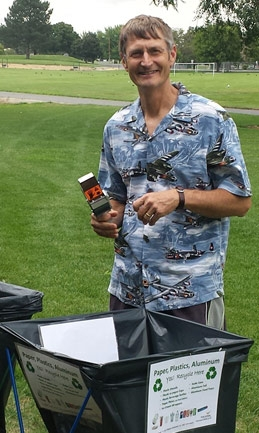
During his time at the Pacific Northwest Site Office (PNSO), Joe Christ demonstrated a commitment to promoting and practicing a sustainable culture at PNSO, the Pacific Northwest National Laboratory (PNNL), and within his community. As the Facilities and Operations Team Lead for PNSO, Joe developed guidance and provided oversight for PNNL’s sustainability efforts. Joe’s efforts helped manage greenhouse gas emissions and promote pollution prevention.
In 2012, Joe served as a key figure in the development of PNSO’s Sustainability Program. The program promotes sustainability leadership and strives to develop goal- oriented sustainability objectives. Joe proved instrumental in the program’s activities by coordinating group actions, tracking progress against objectives, and keeping federal staff engaged. Joe’s leadership and positive attitude ensured sustainability objectives were well communicated with staff and the PNSO Sustainability Plan remained tailored to current priorities.
Joe was also active in a commuting carpool and actively promoted federal telework initiatives. Joe volunteered to support PNNL’s composting program and championed a pedestrian and bicycle friendly campus. In January 2014, Joe retired from service to PNSO. Congratulations and best of luck!
Sustainability Champion
Individuals who demonstrate a history of exemplary performance in leading implementation of sustainable practices while reflecting a comprehensive approach to energy and environmental management through innovative strategies, practices, and outreach.
Melissa Lapsa Pioneers Sustainability Management at ORNL
 In 2008, the Oak Ridge National Laboratory (ORNL) challenged Melissa Lapsa and ORNL staff to reinvent the lab as a DOE benchmark laboratory for sustainability. Melissa accepted the challenge and helped pioneer the development of ORNL’s Sustainable Campus Initiative (SCI).
In 2008, the Oak Ridge National Laboratory (ORNL) challenged Melissa Lapsa and ORNL staff to reinvent the lab as a DOE benchmark laboratory for sustainability. Melissa accepted the challenge and helped pioneer the development of ORNL’s Sustainable Campus Initiative (SCI).
ORNL’s Sustainable Campus Initiative (SCI) strives to achieve enduring sustainability in ORNL’s facilities, operations, and organizational culture. In her SCI leadership role, Melissa provides direction for the SCI’s mission by assembling and guiding core teams from across the laboratory. Melissa recognized early in the process the unique strengths of ORNL’s research and development programs, and sought to join experts from the lab’s operations and research organizations to address the laboratory’s sustainability objectives. Melissa guides the team’s deliverables through a robust metric and tracking system.
The establishment of ORNL’s SCI provided a strong foundation for addressing sustainability site-wide. As missions and objectives change at the Lab, ORNL remains one step ahead and is able to aptly and quickly address federally-mandated sustainability initiatives.
Teresa Krannig Champions IT Efficiency for Energy and Cost Savings
Teresa Krannig, in her role as IT Project Administrator for URS | CH2M Oak Ridge (UCOR), aggressively pursues operational efficiencies and cost savings for Oak Ridge Reservation facilities, including the East Tennessee Technology Park, Oak Ridge National Laboratory, and Y-12 National Security Complex.
Teresa recently led the replacement of UCOR’s printing model with a new, more efficient print services contract. The new contract reduced the need for maintenance of 171 individual printers across the site, while also reducing paper, toner, and energy use. In the first year of the program, UCOR reduced printers by 34% and paper use by 494 reams. The paper use reduction translates to nearly 14,000 kWh of energy and 23,000 gallons of waste water avoided from paper manufacturing.
Fiscal year (FY) 2013 print services improvements resulted in over $92,600 in cost savings from reduced toner and paper use.
Sustainable Communications
Successful and innovative communications and marketing strategies that promote sustainability goals, successes, and best practices.
Y-12 National Security Complex Communicates Sustainability to Drive Change
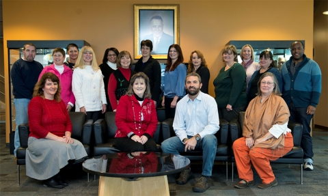
Y-12’s Sustainability and Stewardship team uses “one voice” to broadcast innovative and engaging efforts that promote site-wide sustainability activities. The team uses traditional communications techniques, including the Y-12 Times, the site’s internal newsletter, as well as electronic media, including websites and Y-12’s intranet, to disperse the site’s sustainability message. The communications aim to promote sustainability goals and objectives and share successful projects and best practices. The site shares information on reducing waste, energy and water use, and encouraging the expansion of green buildings and sustainable landscaping.Y-12 sustainability communications encourage staff to improve sustainability at work, home, and in the community.
Y-12 has also partnered with other DOE sites as well as commercial entities to advance sustainability, including sponsoring Tennessee’s Green Star Partnership, the Federal Green Challenge, and hosting Earth Day activities to raise awareness at the site.
Water Management
Recognizes an integrated approach to water resource management, addressing all water types as potential resources (waste, storm, grey, etc.) and identifying opportunities for their reuse
Pantex Plant Wastewater Irrigation Program Saves 1.5 Billion Gallons of Water
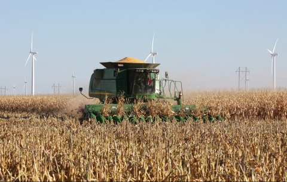
The Pantex Plant developed a resourceful and productive use for excess wastewater. In 2005, Pantex began repurposing site-generated wastewater to irrigate a variety of agricultural crops, including wheat, soybean, corn, and grain sorghum. The wastewater is distributed through a subsurface irrigation system comprised of hundreds of miles of underground piping, tubing, and pressure-compensating drip emitters. The wastewater is distributed through manifold pipes to individual zones located within four tracts of land, each approximately 100 acres in size. Texas Tech University manages the land through a cooperative agreement. The resulting crops are used as animal feed and distributed for flour milling purposes.
In May 2014, Pantex reached a significant milestone with a cumulative total of 1.5 billion gallons of wastewater distributed through the irrigation system since the program’s inception. The project directly supports DOE and National Nuclear Security Administration (NNSA) water conservation goals and is an integral component of site remediation associated with Long-Term Stewardship pursuant to a CERCLA Record of Decision and a RCRA Groundwater Compliance Plan.
LLNL Fights Drought with Multi-Faceted Approach to Water Conservation
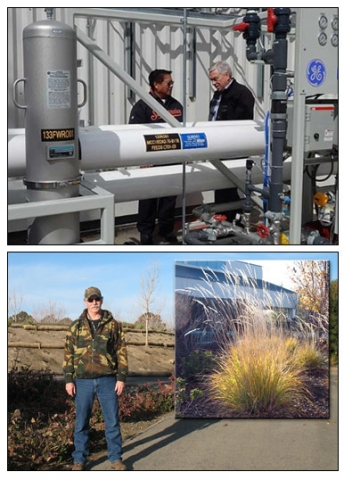
In an effort to combat severe drought conditions in California, the Lawrence Livermore National Laboratory (LLNL) took several steps to improve water conservation.
LLNL launched a successful pilot project that uses treated groundwater to cool equipment and research facilities. This novel approach has the potential to significantly reduce potable water consumption at each of LLNL's five cooling towers, which account for nearly 45% of the lab’s potable water consumption (approximately 100 million gallons annually). Since the inception of the pilot study, the lab reduced water use by 2.3 million gallons. The lab is currently exploring expansion to additional cooling towers.
LLNL also converted existing turf to native landscaping, further reducing water use by 7 million gallons in FY 2014
LLNL’s multi-pronged approach to water conservation reduced potable water use 9.7% in the past year.
Waste Reduction and Pollution Prevention
Innovative and effective waste-reduction programs documenting waste diversion data and composting activities that exceed or supplement targets in the SSPP.
Savannah River Site’s Innovative Process Minimizes TRU Waste Streams
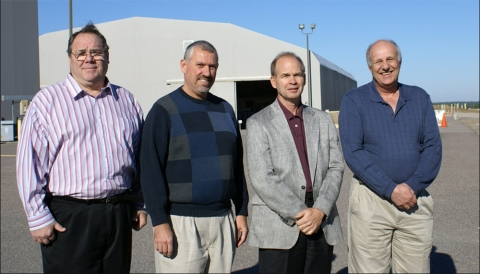Savannah River Solid Waste Engineering, in a partnership with Canberra and the Transuranic (TRU) Waste Programs Central Characterization Project, developed an innovative approach for reducing the quantity of transuranic waste requiring processing. The non-destructive radionuclide assay (NDA) technique compensates for a variety of difficult waste compositions and configurations and minimizes processing, repackaging, transport, and disposal of transuranic materials. This innovative process also reduces exposure and other inherent risks to DOE personnel. Process development and qualification took nearly two years to complete and was approved by the SRS Transuranic Waste (TRU) Team, DOE, the Waste Isolation Pilot Plant (WIPP) organization, and the Environmental Protection Agency.
Application of this new technique to waste at SRS reduced the quantity of TRU waste requiring processing, leading to a cost avoidance of over $10.5 million. This process is WIPP-approved and is available to the DOE complex to support TRU waste certification for shipment and disposal to the WIPP.
Fleet Management
Comprehensive and/or replicable management approaches to fleet management programs. Programs may be at the organizational, regional, or campus-wide level and should include cross-cutting strategies to achieve and exceed fleet goals.
Fleet Requirements Working Group Steers NNSA to Fleet Compliance
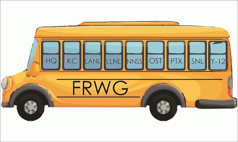
The NNSA Fleet Requirements Working Group (FRWG) tackles by federal fleet sustainability goals and targets by developing innovative solutions that decrease the environmental impact of the NNSA federal fleet.
Established in 2005 as a collaborative peer team, the group focuses on increasing operational efficiency, planning for increased alternative fuel use and alternative fuel vehicle acquisitions, and reducing petroleum use and fleet-related greenhouse gas emissions. Team members are actively encouraged to share best practices, lessons learned and to implement pilot approaches to achieve breakthrough performance.
The working group has helped the NNSA fleet exceed federally-mandated targets. Through FY 2013, the NNSA fleet increased use of alternative fuel by 273%, while decreasing used of covered petroleum 50%, each from a FY 2005 baseline.
Green IT Stewardship
Exemplary performance implementing green information technologies (IT), including power management, sustainable electronics acquisition, and data-center sustainability.
LLNL Data Center Consolidation Delivers Significant Cost Savings
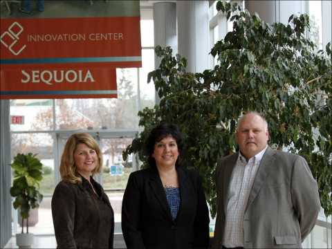
The Lawrence Livermore National Laboratory (LLNL) developed a Data Center Sustainability Master Plan to manage the consolidation and closure of data center space to drive energy and cost savings. The joint collaboration between LLNL’s Weapons and Complex Integration's High Performance Computing data center and the laboratory’s Operations & Business' enterprise data center leveraged the existing LLNL High Performance Computing (HPC) Strategic Facility Master Plan to prepare and execute the plan.
Since 2011, LLNL has closed 23 data centers (26,000 square feet of space), resulting in annual cost savings of $305,000 in energy costs and $43,000 in maintenance costs. The consolidation of space also saved the lab from expenditures on the installation and maintenance of electrical meters for the shuttered data centers. These savings represent a cost avoidance of nearly $10-15 million over the life of the data centers.
EIA and EERE Collaborate to Consolidate Data Center Infrastructure
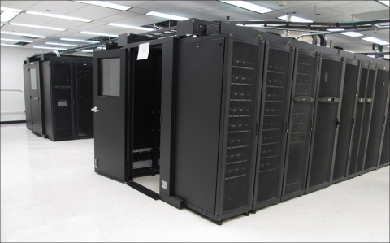
EIA and EERE formed a partnership that yielded the consolidation and optimization of their DOE Headquarters data centers. The data center consolidation project directly supports a number of Federal Green IT initiatives, including IT sustainability goals, the physical closings of data centers as defined in the Federal Data Center Consolidation Initiative (FDCCI), and data center optimization goals outlined in the DOE Strategic Sustainability Performance Plan (SSPP).
The project consolidated the EERE Forrestal 1, EIA Forrestal 2, and the EIA Dallas Field data centers to an optimized, energy efficient, modular data center infrastructure.
The project resulted in significant data center real estate, energy, and physical IT system (servers, storage and network) reductions. In addition, the consolidation project introduced advanced metering and environmental control systems to optimize infrastructure usage (power and cooling) and collect real-time data center performance.
NREL Data Center Efficiency Produces Huge Cost and Energy Savings
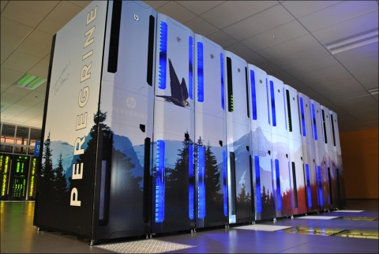
The National Renewable Energy Laboratory (NREL) is world renowned for its commitment to sustainability and for leading by example. Through a partnership with Hewlett Packard, NREL constructed the “Peregrine” high performance computer, which combines ultra-efficiency with state-of-the-art computing. Housed within the Energy Systems Integration Facility (ESIF), the supercomputer features a chiller-less design, warm-water liquid cooling, and a waste heat capture program that redistributes air to heat the facility.
The warm-water cooling system utilizes 75°F water for cooling, allowing the NREL data center to employ highly energy-efficient evaporative cooling towers and eliminating the need for more expensive and energy-demanding mechanical chillers. The returned wastewater reaches 110°F, allowing for additional uses throughout the facility.
The net result of NREL’s ESIF data center are significant cost and energy savings. The data center boasts an annual average power usage effectiveness (PUE) of 1.06, well below the Federal target of 1.4 and that of a typical data center operating at 1.9. The data center saves 840 kW of electricity per megawatt of IT equipment (7,358 MWh annually), saving approximately $800,000 in electricity costs per year. In addition, by capturing and using waste heat for office and laboratory space, NREL offsets an additional $200,000 per year in heating costs, for a total annual savings of $1 million.
Performance Contracting Leader
Successful use and adoption of performance based contracts to increase the efficiency of the Department’s facilities, reduce operating impacts, and increase on-site renewable energy.
Argonne National Laboratory Leverages ESPC for Combined Heat and Power
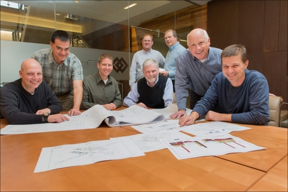
Argonne National Laboratory (ANL) awarded an Energy Savings Performance Contract (ESPC) in March 2014 for an onsite combined heat and power plant. The plant is projected to produce an estimated $3 million in energy savings in the first year and more than $52.3 million in guaranteed savings over the 15-year ESPC contract term. The plant, which will run on natural gas, will also help reduce the laboratory’s carbon footprint, saving 33,044 tons of greenhouse gas emissions annually.
This project is Argonne’s largest and most complex ESPC project to date. The new 6.3 megawatt power plant will replace aging equipment to provide electricity and steam heat for Argonne’s campus. Construction is expected to begin in spring 2015.
The award of this ESPC helped DOE exceed the original $100 million dollar goal set by the President’s Performance Contracting Challenge. DOE is currently working towards a goal of an additional $175 million in performance contracting commitments by December 2016.
Goal Performance And Reporting
Excelled in multiple sustainability goal areas while reporting quality data and developing a compelling Site Sustainability Plan (SSP).
LLNL Advances Sustainability through Planning, Reporting, and Action
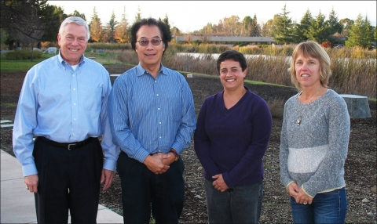
The Lawrence Livermore National Laboratory (LLNL) has made significant progress in meeting the interim targets of many federally-mandated sustainability goals. Through FY 2013, LLNL reduced fleet petroleum use by 71% compared to the FY 2005 baseline; utilized approximately 17% renewable electricity as a%age of overall electricity use; and added 6 new High Performance Sustainable Buildings (HPSB) since FY 2012, raising its total green building count to approximately 10% of its total building inventory. LLNL’s fleet and renewable progress exceed DOE targets, while the HPSB total is among the highest of any DOE site. These successes were driven by a site-wide commitment to sustainability and a dedicated sustainability team.
LLNL’s planning efforts are also especially noteworthy. The Lab’s annual Site Sustainability Plan (SSP) proves a comprehensive roadmap detailing projects, energy savings, and funding strategies. Most importantly, the SSP focuses not only on the strengths and successes achieved by the site, but also on its weakness and plans for improvement.
LLNL also recently finalized an agreement to develop a 3-MW solar photovoltaic array on their land, showing continued commitment to the principles leading to this award.
NNSS Draws National Praise for Sustainability Progress and Programs
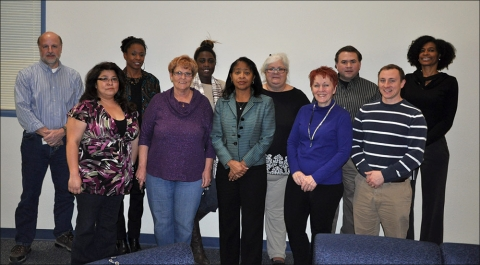While the Nevada National Security Site (NNSS) is well situated to exceed numerous federally-mandated sustainability goals, the site’s progress in reducing greenhouse gas (GHG) emissions is perhaps most noteworthy. Through FY 2013, NNSS reduced scope 1 and 2 (direct) and scope 3 (indirect) greenhouse gas (GHG) emissions by more than 34% and 18%, respectively, each relative to their FY 2008 baseline. This progress exceeds the interim targets for each of these goal areas.
The NNSS team also made significant advances in fleet management. Through FY 2013, the site reduced fleet petroleum use by 68 compared to the FY 2005 baseline. In addition, the site increased alternative fuel use by approximately 800% since FY 2005, raising the share of alternative fuel use from 3% to nearly 50%. NNSS’s efforts have also received national attention.
Each of these successes surpass the end goal targets. NNSS showcases their progress through a comprehensive SSP that improves each year. The SSP contains specific actions taken, plans for future projects, and detailed projections for how those projects will impact their sustainability performance.
NNSS also received a FEMP Federal Energy and Water Management Award for their Alternative Fuel Vehicle Management Program, which led to improved use of renewable fuels while decreasing petroleum utilization.